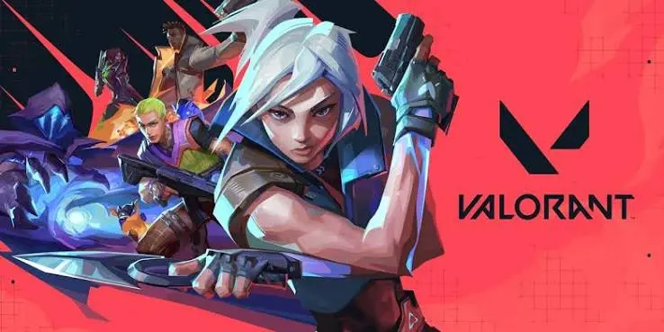

Selamat Datang di Valorant Hub
Website ini dibuat sebagai hobi untuk berbagi informasi tentang Valorant, game tactical shooter besutan Riot Games yang cukup populer di kalangan gamer PC Indonesia.
Pelajari Lebih Lanjut
Mengapa Valorant?
Tactical Gameplay
Kombinasi antara precise gunplay dan kemampuan unik agent bikin tiap ronde butuh mikir, bukan cuma aim.
Scene Esports
Turnamen VCT (Valorant Champions Tour) jadi ajang kompetisi paling bergengsi, dengan hadiah yang besar.
Agent Unik
Ada lebih dari 20 agent yang bisa dipilih, masing-masing dengan ability khas, dari Duelist sampai Sentinel.
Statistik Valorant
| Aspek | Detail | Keterangan |
|---|---|---|
| Rilis | 2 Juni 2020 | Free-to-play di PC |
| Developer | Riot Games | Pembuat League of Legends |
| Genre | Tactical FPS | 5v5 round-based |
| Agent | 24 Agent | 4 Role: Duelist, Controller, Initiator, Sentinel |
| Map | 10+ Map | Masing-masing dengan gimmick unik |
| Rank | 9 Tier | Dari Iron sampai Radiant |